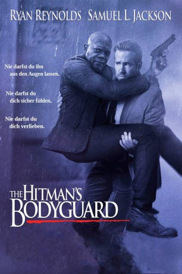

#7950 Killer's Bodyguard
 gesehen am 19.01.2019
gesehen am 19.01.2019
 
 IMDB-Wertung: 6.9 / 10
IMDB-Wertung: 6.9 / 10  Metascore: 47
Metascore: 47 
Der weltbeste Bodyguard (Ryan Reynolds) wird engagiert, um ausgerechnet das Leben seines Erzfeindes zu schützen – eines weltweit berüchtigten Killers (Samuel L. Jackson). Der unaufhaltsame Bodyguard und der manipulative Auftragsmörder versuchen seit Jahren sich gegenseitig auszuschalten, und müssen nun die nächsten total abgefahrenen 24 Stunden gemeinsam durchstehen. Bei ihrer unfassbar toughen Reise von England nach Den Haag müssen sie Highspeed-Autorennen und absurde Bootsverfolgungsjagden meistern und sich dem gnadenlosen osteuropäischen Diktator (Gary Oldman), der Blut sehen will, entgegenstellen. Salma Hayek rundet das Chaos als Jacksons nicht minder berüchtigte Ehefrau ab.
Jahr: 2017
Dauer: 118 Minuten
FSK: 16
Land: Niederlande Studio: 20th Century FoxTonspuren: DTS - ,
Untertitel:
Auflösung: 1080p (1920x808) Größe: 6871 MB
Genre: Action, Komödie
Regisseur: Patrick Hughes
Drehbuch: Tom O'Connor
Soundtrack: Atli Örvarsson
Darsteller:
 Elodie Yung als Amelia Roussel
Elodie Yung als Amelia Roussel Ryan Reynolds als Michael Bryce
Ryan Reynolds als Michael Bryce- Roy Hill als Helicopter Pilot / Newscaster
 Richard E. Grant als Seifert
Richard E. Grant als Seifert Gary Oldman als Vladislav Dukhovich
Gary Oldman als Vladislav Dukhovich- Rod Hallett als Professor Asimov
 Yuri Kolokolnikov als Ivan
Yuri Kolokolnikov als Ivan- Noortje Herlaar als ICC Court Clerk
 Georgie Glen als ICC Lead Judge
Georgie Glen als ICC Lead Judge- Michael Gor als Livitin
 Barry Atsma als Moreno
Barry Atsma als Moreno- Bradley John als News Reporter
 Kirsty Mitchell als Harr
Kirsty Mitchell als Harr Samuel L. Jackson als Darius Kincaid
Samuel L. Jackson als Darius Kincaid- Tine Joustra als Renata Casoria
 Sam Hazeldine als Garrett
Sam Hazeldine als Garrett Joaquim de Almeida als Jean Foucher
Joaquim de Almeida als Jean Foucher- Chris Brazier als Garrett's Officer
 Alan McKenna als Interpol Agent
Alan McKenna als Interpol Agent Salma Hayek als Sonia Kincaid
Salma Hayek als Sonia Kincaid- Donna Preston als Sonia's Cell Mate
 Joséphine de La Baume als Interpol Young Agent
Joséphine de La Baume als Interpol Young Agent- Renars Latkovskis als Dukhovich Merc
- Samantha Bolter als Coventry Police Officer
 Ori Pfeffer als Vacklin
Ori Pfeffer als Vacklin- Michael Jinks als English Country Town Night Clerk
- Justin Pearson als Ambush Sniper
 Velimir Velev als Preacher Murderer
Velimir Velev als Preacher Murderer- Dijarn Campbell als Young Kincaid
 Owen Davis als Mourner
Owen Davis als Mourner- Abbey Hoes als Flower Stall Clerk
- Antoin Cox als Amsterdam Bartender
- Nicolas de Pruyssenaere als Dutch Cop
 Mounir Margoum als Zidane
Mounir Margoum als Zidane- Ilian Emanviov als Burly Guard
- Lan Artis als Immigrant (uncredited)
- Daan Aufenacker als Pedestrian (uncredited)
 Velizar Binev als Protester (uncredited)
Velizar Binev als Protester (uncredited)- Joe Bryant als Interpol Agent (uncredited)
 Steve Carroll als Lawyer (uncredited)
Steve Carroll als Lawyer (uncredited) Ross Carter als Interpol Agent (uncredited)
Ross Carter als Interpol Agent (uncredited) Tom Dab als Policeman (uncredited)
Tom Dab als Policeman (uncredited) Truus de Boer als Cyclist (uncredited)
Truus de Boer als Cyclist (uncredited)- Bruno Enrique als Pedestrian (uncredited)
 Karl Farrer als Barrister (uncredited)
Karl Farrer als Barrister (uncredited) Dino Fazzani als Prison Guard (uncredited)
Dino Fazzani als Prison Guard (uncredited)- Jason Grangier als Interpol Agent (uncredited)
 Lee Nicholas Harris als CO19 officer (uncredited)
Lee Nicholas Harris als CO19 officer (uncredited)- Solomon Taiwo Justified als Passerby (uncredited)
 Alex Klaus als SO19 Officer (uncredited)
Alex Klaus als SO19 Officer (uncredited)
Datei: X:\2017(G-M)\Killer's Bodyguard (2017, FSK16, 1920x808).mkv seit 07.01.2018
Festplatte: HD 2017(A-Z)-2018(A-F)
 Es gibt insgesamt 148 Filme in der Gruppe '2017(G-M)'
Es gibt insgesamt 148 Filme in der Gruppe '2017(G-M)'